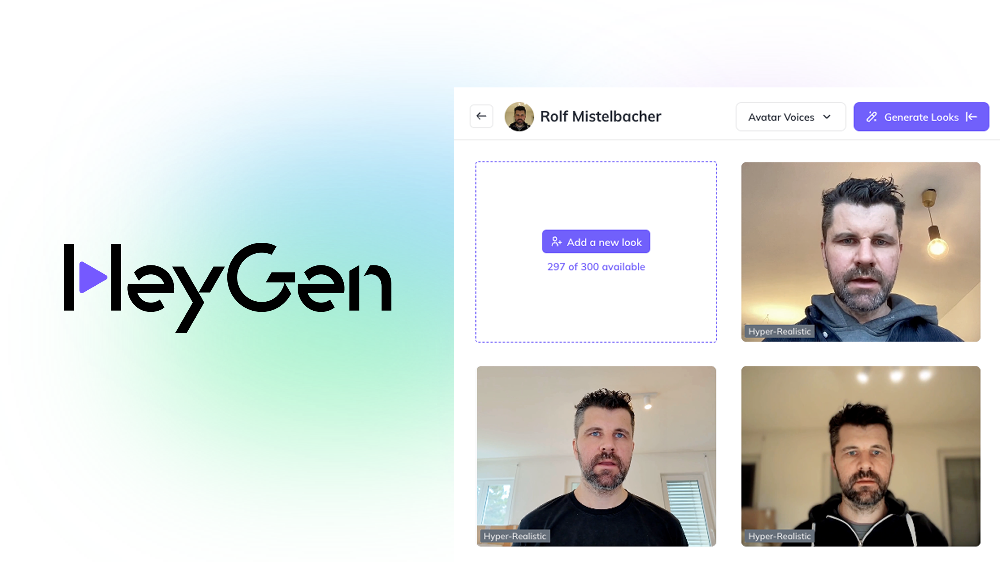

HeyGen es una plataforma de creación de contenido audiovisual mediante I.A., permitiendo generar videos y presentaciones automáticamente.
HeyGen es una de las plataformas de Inteligencia Artificial (IA) generativa más populares y avanzadas, especializada en la creación de videos.
Su principal característica es que te permite generar videos de alta calidad con avatares digitales realistas que hablan, con solo escribir el guion. Es ideal para contenido de marketing, formación, comunicación interna y más, sin necesidad de cámara, equipo de grabación o experiencia en edición.

¿Cómo funciona HeyGen?
1. 🚶 Seleccionar el Vocero (El Avatar)
El proceso comienza con la elección o creación del personaje que hablará en el video:
Avatares de Stock: HeyGen ofrece una biblioteca de avatares prediseñados (personas con diferentes apariencias y fondos) listos para ser animados.
Avatar Personalizado (Clonación Digital):
El usuario graba y sube un video corto (generalmente de 2 a 5 minutos) de sí mismo mirando a la cámara y hablando.
La IA analiza este metraje para capturar los rasgos faciales, movimientos, gesticulación y entonación del usuario.
A menudo se requiere un video de consentimiento para verificar que la persona está autorizando la creación de su doble digital, evitando así el uso indebido (deepfakes).
2. 📝 Proporcionar el Guion (El Prompt)
El usuario proporciona el contenido que el avatar debe decir de una de estas tres formas:
Escribir el Texto (Text-to-Speech): El usuario simplemente escribe el guion. HeyGen utiliza un modelo de síntesis de voz (Text-to-Speech) de alta calidad para generar el audio con voces realistas.
Subir Audio: El usuario puede subir un archivo de audio previamente grabado.
Clonación de Voz (Opcional): Si el usuario ha clonado su voz, el audio generado por IA sonará exactamente como ellos, manteniendo la voz de la marca.
3. 🗣️ Sincronización Labial y Animación (Deep Learning)
Este es el corazón de la tecnología de HeyGen:
Análisis del Audio: La IA analiza el archivo de audio generado o subido, dividiéndolo en fonemas (los sonidos del habla).
Generación de Sincronización Labial: Utilizando modelos avanzados de Deep Learning, el sistema manipula la boca, los labios y los músculos faciales del avatar para que coincidan perfectamente con los fonemas del audio. Esto se conoce como Lip-Sync (Sincronización Labial) y es lo que hace que el resultado se vea natural.
Movimiento Corporal: Además de los labios, la IA añade movimientos sutiles de la cabeza, expresiones faciales y gestos corporales para aumentar el realismo y la expresividad.
4. 🌐 Traducción y Localización (Localización de Video)
Una de sus funcionalidades más potentes es la traducción:
Si subes un video en un idioma y pides traducirlo, la IA traduce el audio y luego aplica el proceso de sincronización labial para que el avatar (o la persona original del video) parezca estar hablando el nuevo idioma de forma nativa.
Convierte texto, imágenes o guiones en videos mediante algoritmos de I.A. y plantillas predefinidas.
¿Cómo se utiliza HeyGen?
Se selecciona la plantilla, se ingresa el contenido y la I.A. genera automáticamente el video final listo para descargar.